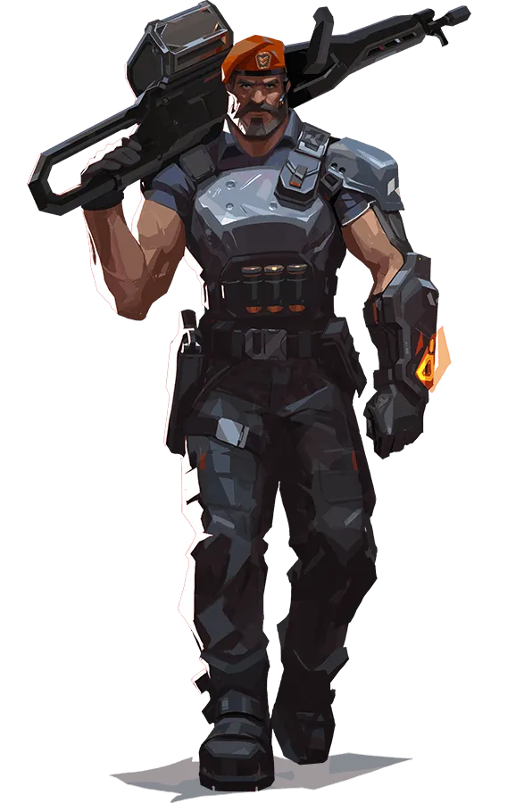

Brimstone

Compétences
- Incendiary (C): Lance un projectile explosif qui crée une zone de feu persistante, infligeant des dégâts aux ennemis qui la traversent.
- Stim Beacon (Q): Place un dispositif qui augmente temporairement la vitesse de tir de tous les joueurs à proximité.
- Orbital Strike (E): Utilise une tablette pour marquer une zone sur la carte, puis lancer une frappe orbitale destructrice sur cette zone.
- Orbital Strike (X): Demande un frappe aérienne qui se déploie sur une zone ciblée.
Cartes Recommandées
| Carte |
Raison |
Nombre de fois joué |
| Bind |
Les capacités de Brimstone permettent de verrouiller efficacement les zones stratégiques sur Bind. |
18000 |
| Ascent |
Ses capacités de contrôle de zone sont utiles pour sécuriser les sites de bombe sur Ascent. |
12000 |
Conseils d'Utilisation
Utilisez les fumigènes et les frappes aériennes de Brimstone pour contrôler efficacement les zones et soutenir votre équipe lors des attaques ou des défenses.